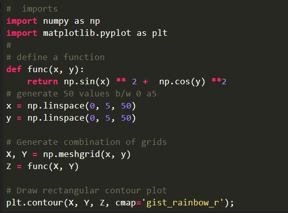
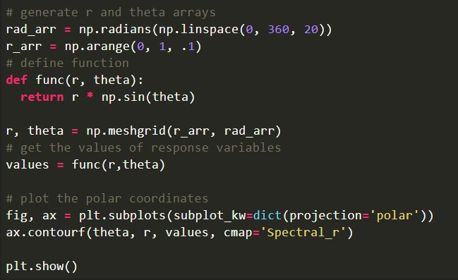

CONTOUR PLOTS
WHAT IS A CONTOUR PLOT?
A contour plot, also known as a contour map or contour chart, is a graphical representation
of three-dimensional data on a two-dimensional surface.A contour plot is a map that shows
how a specific variable (like elevation or temperature) changes across an area. It uses contour
lines to connect points with the same value.
The contour plot is formed by:
- Vertical axis: independent variable 2
- Horizontal axis: variable 1
- lines: values (or) z slices, can be calculated with the help (x,y).
WHY A CONTOUR PLOT IS USED?
- Simplify 3D Data: plots show 3D data on a 2D plane, making it easier to
understand complex relationships.
- Highlight Peaks and Valleys: Contour lines help identify high and low points in the data,
like mountain peaks or depressions
- Interpolate Data: Contour plots estimate values between measured data points, useful in
various applications
contour plots are a powerful tool for simplifying and visualizing complex data, especially
when dealing with spatial and continuous datasets.
WHERE CONTOUR PLOTS ARE USED?
- Geography: Contour maps are frequently used to represent elevation, topography, and
geological features on geographic maps.
- Meteorology: Contour plots help meteorologists visualize temperature, pressure, and
weather patterns across regions.
- Civil Engineering: civil engineering, contour plots are used for site planning, land
development, and infrastructure design.
- Scientific Research: Contour plots are used in various scientific disciplines to visualize
and analyze data, whether it's from experiments, simulations, or observations.
- Education: They are used in educational settings to teach students about spatial data
and data visualization.
contour plots find application in a wide range of fields where understanding how data
changes across a surface is crucial for analysis, decision-making, and communication of
information.
TYPES OF CONTOUR PLOTS:
-
Contour Line Plots: Show contour lines to represent data values
-
Filled Contour Plots: Fill the areas between contour lines with colors or shading.
- Rectangular Contour plot: projection of 2D-plot in 2D-rectangular canvas.
- polar contour plot: Polar contour plot is plotted by using the polar coordinates r
and theta.
- Ternary contour plot: contour plot is used to represent the relationship
between 3 explanatory variables and the response variable in the form of a filled
triangle
there are many different types of contour plots the above given types are few of them.
IMPLEMENTATIONS:
EXAMPLE 1:

OUTPUT

EXAMPLE 2:

OUTPUT

SUBMITTED BY
NAME:RUQYYA NAZEENE.N
ROLL-NO:22921
DEPARTMENT:B.Tech Artificial intelligence and data science
Assignment number:01
Subject:Data Exploration and Visualization
THANK YOU!!!